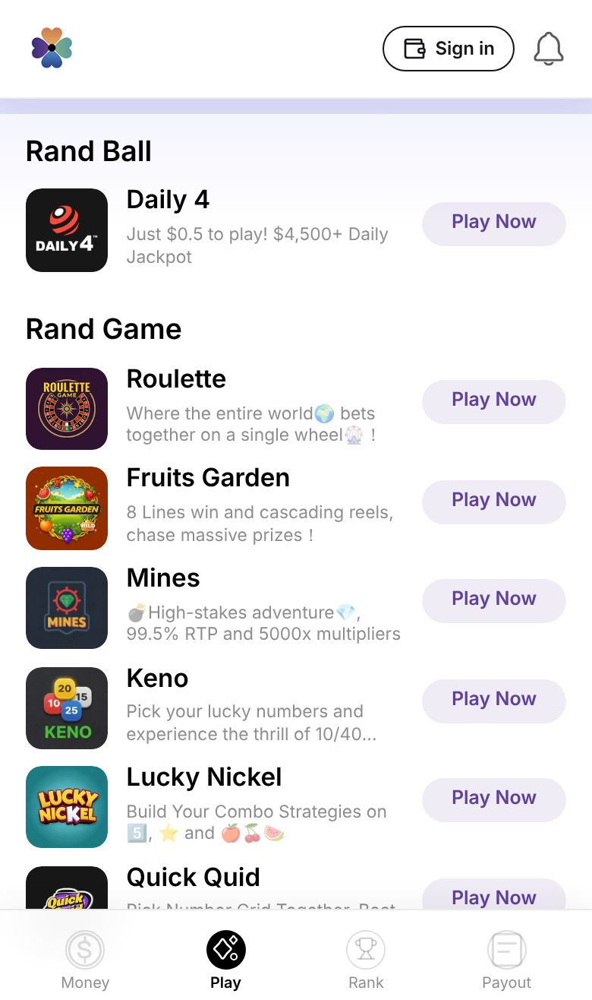
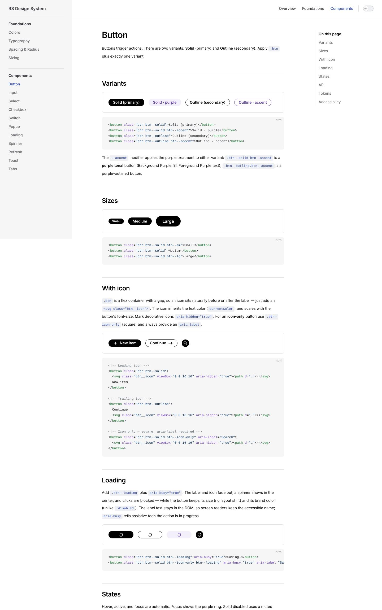
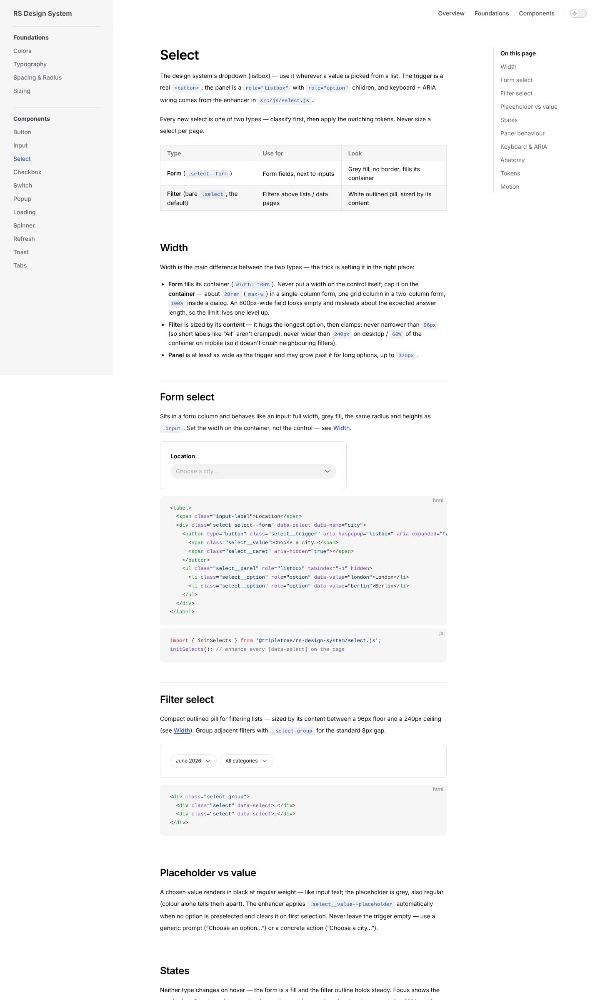
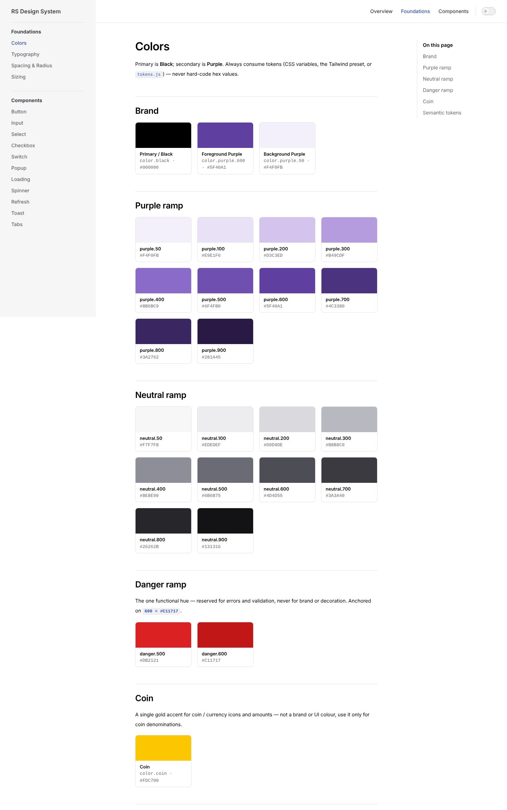
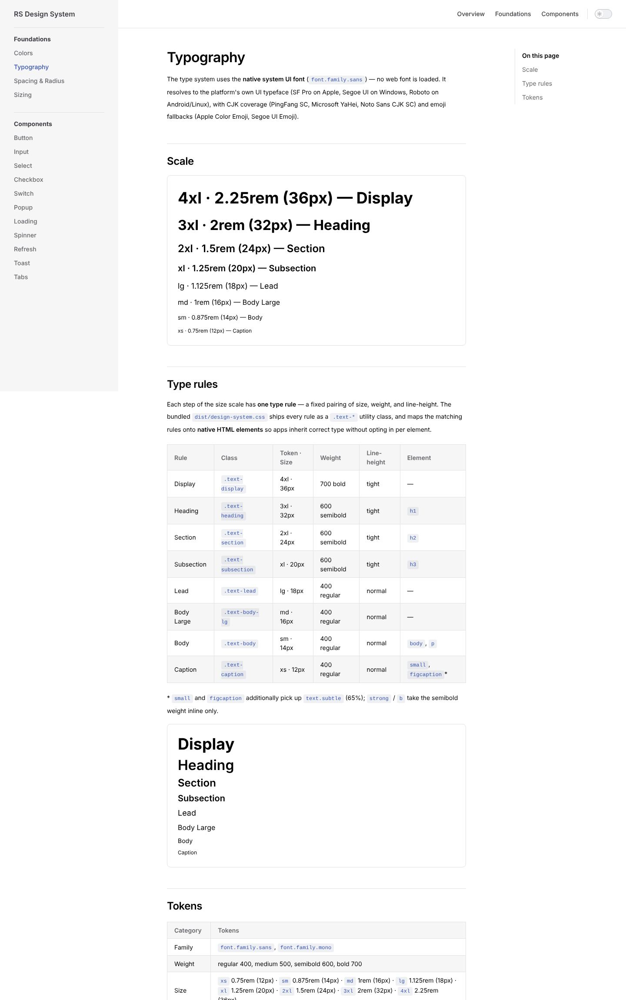
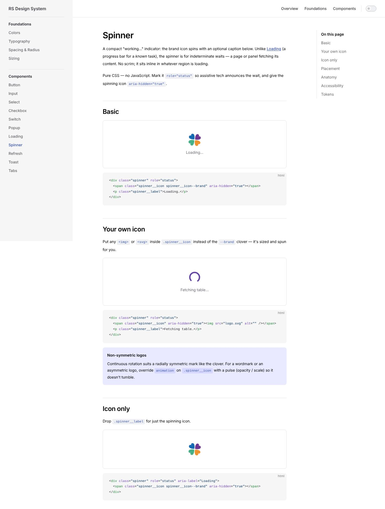
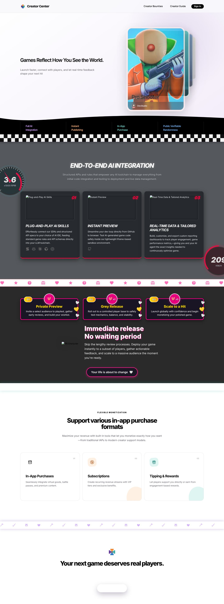
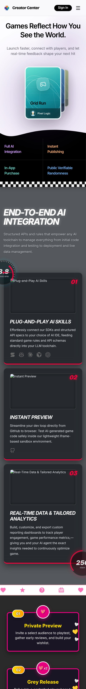

index / case 05 — visual design + design system · consumer
Randseed
Consumer game platform: visual UI first, then a component system AI coding agents call directly.


11components, plain CSS, framework-agnostic
6 → 4token files compiled into four outputs
36button variants in the Figma component set
3agent rule files: Claude, Copilot, skill
01Visual
Black leads, purple accents, games bring colour.
Coin yellow only on amounts; red only on errors.
Blackcolor.black · #000000primary · actions · text
Purple 600color.purple.600 · #5F40A1focus · links · accent
Purple 50color.purple.50 · #F4F0FBsurfaces · tonal buttons
Coincolor.coin · #FDC700amounts only
Danger 600color.danger.600 · #C11717errors only
02System
One token set, four outputs.
W3C DTCG tokens compile to CSS, SCSS, JS and Tailwind; Figma binds the same values. Components are plain CSS, usable from any framework.
tokens/ (W3C DTCG — the only place values are written)
├─ color.json semantic.json typography.json spacing.json radius.json size.json
│
└─▶ style-dictionary
├─▶ dist/tokens.css CSS custom properties
├─▶ dist/tokens.scss Sass
├─▶ dist/tokens.js JS
├─▶ tailwind.preset.js Tailwind
└─▶ dist/design-system.css tokens + 11 components, one file
Figma library ◀── same values: Primitives + Semantic variables, 8 text styles,
Button (36 variants) · Input (12) · Select (10) · Checkbox (12) · …
03Live
Live components, not screenshots.
The published CSS and scripts, unmodified. Try them.
04For agents
Built for coding agents to call.
- CLAUDE.md, Copilot rules, a design-system skill
- Lint-style rules: no hard-coded values, reuse classes
- A verify skill: test in a real browser before handing over
> prompt
Add a “Claim daily reward” card to the wallet page.
< agent loads .claude/skills/design-system/SKILL.md
✓ tokens are the single source of truth
✓ primary = black, accent = purple.600 / purple.50
✓ reuse .btn, .toast, .refresh — do not invent
< output
<section class="card" style="background: var(--bg-subtle)">
<h3 class="text-subsection">Daily reward</h3>
<span class="balance">120 <button class="refresh" data-refresh
aria-label="Refresh reward">…</button></span>
<button class="btn btn--solid btn--accent">Claim</button>
</section>
✗ no hex values ✗ no new button style ✓ focus ring kept
# CLAUDE.md — RS Design System
Read Design.md for the full spec before generating or
changing any UI.
## Rules when writing UI
- No hard-coded values. Reference tokens
(var(--color-purple-600), the Tailwind preset, or tokens.js).
- Color roles: primary Black #000000; secondary Purple —
fg #5F40A1, bg #F4F0FB. Prefer semantic tokens.
- Buttons: .btn + .btn--solid | .btn--outline
(+ .btn--accent, .btn--sm / --lg, .btn--loading).
- Reuse components: input, select, checkbox, switch, tabs,
toast, popup, loading, spinner, refresh — check
docs/components/ before building anything new.
- A11y: keep the purple focus ring; real <button>/<a>;
WCAG AA pairings.
05Docs
One page per component.
Variants, states, API, tokens, accessibility: the same pages agents read.





06In use
Same system, different personality.
The developer platform imports the system as a package and adds arcade-style brand expression on top.


Figma library and repository on request.
Book a walkthrough →